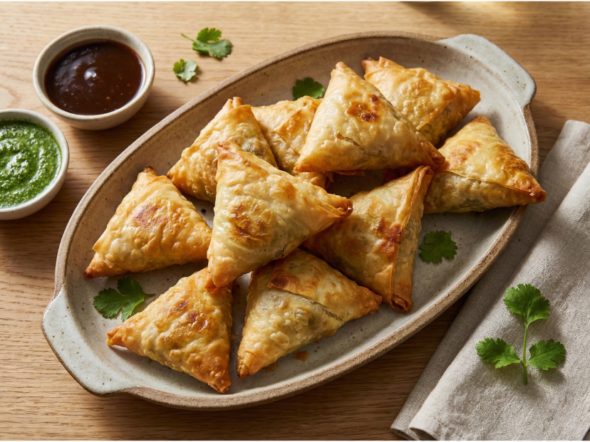

| Zutaten | Menge |
| Kartoffeln | 300 g |
| Salz | 1 Prise |
| Koriander | 5 Zweige |
| Knoblauch | 1 Zehe |
| Ingwer | 10 g |
| Erbsen | 200 g |
| Garam Masala | 1½ EL |
| gemahlender Koriander | 1 EL |
| Zitronenschale | 1 EL |
| gemahlener Kreuzkümmel | 1 EL |
| Cayennepfeffer | 1 TL |
| Speisestärke | 1 EL |
| Wasser | 3 EL |
| Tante Fanny Filo- & Yufkateig | 1 |
| Öl | |
| Pfeffer |